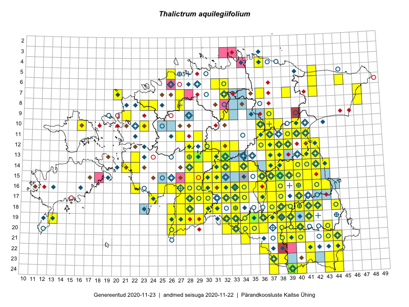

Thalictrum aquilegiifolium
Uuendatud: 2016-12-02
Kaardile koondatud taksonid: Thalictrum aquilegiifolium L.

Kaart põhineb 194 vaatlusel. Taksonit on leitud 135 ruudust.
Kuvatud viited 20 esimesele andmebaasikirjele, ülejäänud PlutoFis
- Thea Kull: 2015-07-07: 16-40: ala
- Peedu Saar, Liina Oja: 2015-05-20: 18-27: ala
- Malle Leht: 2015-08-02: : ala
- Peedu Saar, Ott Luuk: 2015-06-21: 14-41: ala
- Peedu Saar, Ott Luuk: 2015-06-21: 14-42: ala
- Peedu Saar: 2015-07-04: 18-44: ala
- Peedu Saar: 2015-07-15: 15-39: ala
- Ott Luuk, Peedu Saar: 2015-08-13: 24-44: ala
- Peedu Saar, Liina Oja: 2015-06-09: 17-28: ala
- Peedu Saar, Liina Oja: 2015-06-11: 15-29: ala
- Peedu Saar, Liina Oja: 2015-06-11: 16-29: ala
- Malle Leht: 2015-07-25: 18-40: ala
- Malle Leht: 2015-07-27: 18-40: ala
- Toomas Kukk, Tiit Hallikma: 2015-06-10: 15-31: ala
- Thea Kull, Eerik Leibak: 2015-07-05: 16-42: ala
- Peedu Saar: 2015-08-11: 13-41: ala
- Rein Kalamees, Kersti Püssa: 2015-09-02: 04-36: ala
- Tiit Hallikma, Toomas Kukk: 2015-06-11: 11-29: GPS punkt
- Rein Kalamees, Kersti Püssa: 2015-06-07: 06-32: ala
- Peedu Saar, Eerik Leibak: 2015-08-18: 11-39: ala